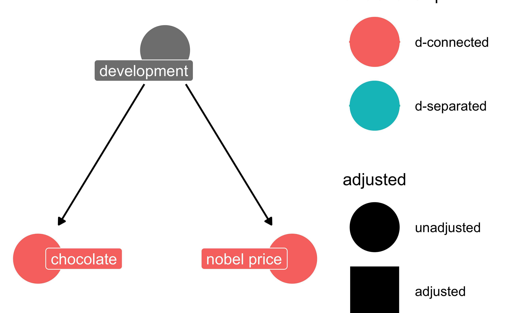

Confounder
A confounder is on of the few (maybe three) “atoms” of causality, following the framework of Judea Parl and others.
A confounder can be depicted like this:

Following a study that reported a strong correlation between chocolate consumption and Nobel prices.

Simulating a confounder structure
Now let’s simulate a simple confounder structure.
Here’s some code that will help us:
Let’s have a look at the code:
##
## n <- 100
##
## set.seed(42)
##
## d_sim <-
## tibble(
## x = rnorm(n, 0, 0.5),
## y = rnorm(n, 0, 0.5),
## group = "A"
## ) %>%
## bind_rows(
## tibble(
## x = rnorm(n, 1, 0.5),
## y = rnorm(n, 1, 0.5),
## group = "B")
## )
##
##
## p_konf1 <-
## d_sim %>%
## ggplot(aes(x = x, y = y)) +
## geom_point() +
## geom_smooth(method = "lm") +
## labs(title = "Ohne Kontrolle der Konfundierungsvariablen")
##
## p_konf2 <-
## d_sim %>%
## ggplot(aes(x = x, y = y, color = group)) +
## geom_point() +
## geom_smooth(method = "lm") +
## labs(title = "Mit Kontrolle der Konfundierungsvariablen") +
## theme(legend.position = "bottom")